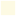

<!doctype html>
<html lang="en">
    <head>
        <meta charset="utf-8">
        <meta http-equiv="X-UA-Compatible" content="IE=edge">
        <meta name="viewport" content="initial-scale=1,user-scalable=no,maximum-scale=1,width=device-width">
        <meta name="mobile-web-app-capable" content="yes">
        <meta name="apple-mobile-web-app-capable" content="yes">
        <link rel="stylesheet" href="css/leaflet.css">
		<link rel="stylesheet" href="css/leaflet-control-credits.css">
        <link rel="stylesheet" href="css/qgis2web.css"><link rel="stylesheet" href="css/fontawesome-all.min.css">
        <style>
        #map {
            width: 1011px;
            height: 852px;
        }
        </style>
        <title></title>
    </head>
    <body>
        <div id="map">
        </div>
        <script src="js/qgis2web_expressions.js"></script>
        <script src="js/leaflet.js"></script>
        <script src="js/leaflet.rotatedMarker.js"></script>
        <script src="js/leaflet.pattern.js"></script>
        <script src="js/leaflet-hash.js"></script>
        <script src="js/Autolinker.min.js"></script>
        <script src="js/rbush.min.js"></script>
        <script src="js/labelgun.min.js"></script>
        <script src="js/leaflet-control-credits.js"></script>
		<script src="js/lleaflet-control-credits-src.js"></script>
		
        <script src="data/IBGE2010_1.js"></script>
        <script src="data/Pontos_IA_2.js"></script>
        <script>
        var map = L.map('map', {
            zoomControl:true, maxZoom:28, minZoom:1
        }).fitBounds([[-5.335375161071734,-37.46900138634628],[-5.088106656011514,-37.175479125633615]]);
        var hash = new L.Hash(map);
        map.attributionControl.setPrefix('<a href="https://github.com/tomchadwin/qgis2web" target="_blank">qgis2web</a> &middot; <a href="https://leafletjs.com" title="A JS library for interactive maps">Leaflet</a> &middot; <a href="https://qgis.org">QGIS</a>');
        var autolinker = new Autolinker({truncate: {length: 30, location: 'smart'}});
        var bounds_group = new L.featureGroup([]);
        function setBounds() {
        }
        map.createPane('pane_GoogleSatellite_0');
        map.getPane('pane_GoogleSatellite_0').style.zIndex = 400;
        var layer_GoogleSatellite_0 = L.tileLayer('https://mt1.google.com/vt/lyrs=s&x={x}&y={y}&z={z}', {
            pane: 'pane_GoogleSatellite_0',
            opacity: 1.0,
            attribution: '<a href="https://www.google.at/permissions/geoguidelines/attr-guide.html">Map data ©2015 Google</a>',
            minZoom: 1,
            maxZoom: 28,
            minNativeZoom: 0,
            maxNativeZoom: 20
        });
        layer_GoogleSatellite_0;
        map.addLayer(layer_GoogleSatellite_0);
        function pop_IBGE2010_1(feature, layer) {
            var popupContent = '<table>\
                    <tr>\
                        <th scope="row">NM_BAIRRO</th>\
                        <td>' + (feature.properties['NM_BAIRRO'] !== null ? autolinker.link(feature.properties['NM_BAIRRO'].toLocaleString()) : '') + '</td>\
                    </tr>\
                </table>';
            layer.bindPopup(popupContent, {maxHeight: 400});
        }

        function style_IBGE2010_1_0() {
            return {
                pane: 'pane_IBGE2010_1',
                opacity: 1,
                color: 'rgba(255,255,255,1.0)',
                dashArray: '',
                lineCap: 'butt',
                lineJoin: 'miter',
                weight: 2.0, 
                fill: true,
                fillOpacity: 1,
                fillColor: 'rgba(248,243,168,0.3176470588235294)',
                interactive: true,
            }
        }
        map.createPane('pane_IBGE2010_1');
        map.getPane('pane_IBGE2010_1').style.zIndex = 401;
        map.getPane('pane_IBGE2010_1').style['mix-blend-mode'] = 'normal';
        var layer_IBGE2010_1 = new L.geoJson(json_IBGE2010_1, {
            attribution: '',
            interactive: true,
            dataVar: 'json_IBGE2010_1',
            layerName: 'layer_IBGE2010_1',
            pane: 'pane_IBGE2010_1',
            onEachFeature: pop_IBGE2010_1,
            style: style_IBGE2010_1_0,
        });
        bounds_group.addLayer(layer_IBGE2010_1);
        map.addLayer(layer_IBGE2010_1);
        function pop_Pontos_IA_2(feature, layer) {
            var popupContent = '<table>\
                    <tr>\
                        <th scope="row">ID</th>\
                        <td>' + (feature.properties['ID'] !== null ? autolinker.link(feature.properties['ID'].toLocaleString()) : '') + '</td>\
                    </tr>\
                    <tr>\
                        <th scope="row">Tipo1</th>\
                        <td>' + (feature.properties['Tipo1'] !== null ? autolinker.link(feature.properties['Tipo1'].toLocaleString()) : '') + '</td>\
                    </tr>\
                    <tr>\
                        <th scope="row">Tipo2</th>\
                        <td>' + (feature.properties['Tipo2'] !== null ? autolinker.link(feature.properties['Tipo2'].toLocaleString()) : '') + '</td>\
                    </tr>\
                    <tr>\
                        <th scope="row">Tipo3</th>\
                        <td>' + (feature.properties['Tipo3'] !== null ? autolinker.link(feature.properties['Tipo3'].toLocaleString()) : '') + '</td>\
                    </tr>\
                    <tr>\
                        <th scope="row">Latitude</th>\
                        <td>' + (feature.properties['Latitude'] !== null ? autolinker.link(feature.properties['Latitude'].toLocaleString()) : '') + '</td>\
                    </tr>\
                    <tr>\
                        <th scope="row">Longitude</th>\
                        <td>' + (feature.properties['Longitude'] !== null ? autolinker.link(feature.properties['Longitude'].toLocaleString()) : '') + '</td>\
                    </tr>\
                    <tr>\
                        <th scope="row">Local</th>\
                        <td>' + (feature.properties['Local'] !== null ? autolinker.link(feature.properties['Local'].toLocaleString()) : '') + '</td>\
                    </tr>\
                    <tr>\
                        <th scope="row">Foto</th>\
                        <td>' + (feature.properties['Foto'] !== null ? '' : '') + '</td>\
                    </tr>\
                </table>';
            layer.bindPopup(popupContent, {maxHeight: 400});
        }

        function style_Pontos_IA_2_0() {
            return {
                pane: 'pane_Pontos_IA_2',
        rotationAngle: 0.0,
        rotationOrigin: 'center center',
        icon: L.icon({
            iconUrl: 'markers/pata_azul.svg',
            iconSize: [30.4, 30.4]
        }),
                interactive: true,
            }
        }
        map.createPane('pane_Pontos_IA_2');
        map.getPane('pane_Pontos_IA_2').style.zIndex = 402;
        map.getPane('pane_Pontos_IA_2').style['mix-blend-mode'] = 'normal';
        var layer_Pontos_IA_2 = new L.geoJson(json_Pontos_IA_2, {
            attribution: '',
            interactive: true,
            dataVar: 'json_Pontos_IA_2',
            layerName: 'layer_Pontos_IA_2',
            pane: 'pane_Pontos_IA_2',
            onEachFeature: pop_Pontos_IA_2,
            pointToLayer: function (feature, latlng) {
                var context = {
                    feature: feature,
                    variables: {}
                };
                return L.marker(latlng, style_Pontos_IA_2_0(feature));
            },
        });
        bounds_group.addLayer(layer_Pontos_IA_2);
        map.addLayer(layer_Pontos_IA_2);
        var baseMaps = {};
        L.control.layers(baseMaps,{' Aparelhos Instalados': layer_Pontos_IA_2,' Limites dos Bairros': layer_IBGE2010_1,"Google Satellite": layer_GoogleSatellite_0,}).addTo(map);
        setBounds();
		var credctrl = L.controlCredits({
    image: "images/IA.png",
    link: "http://www.greeninfo.org/",
    text: "Instituto de proteção e acolhimento de animais em situação de<br/> vulnerabilidade sem fins lucrativos"
}).addTo(map);
		
        </script>
    </body>
</html>
